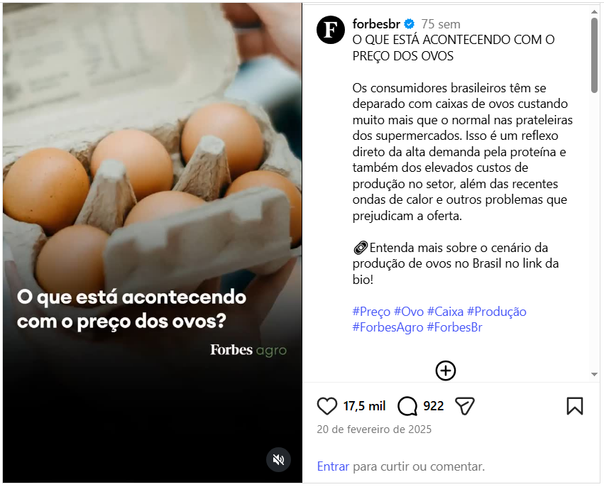
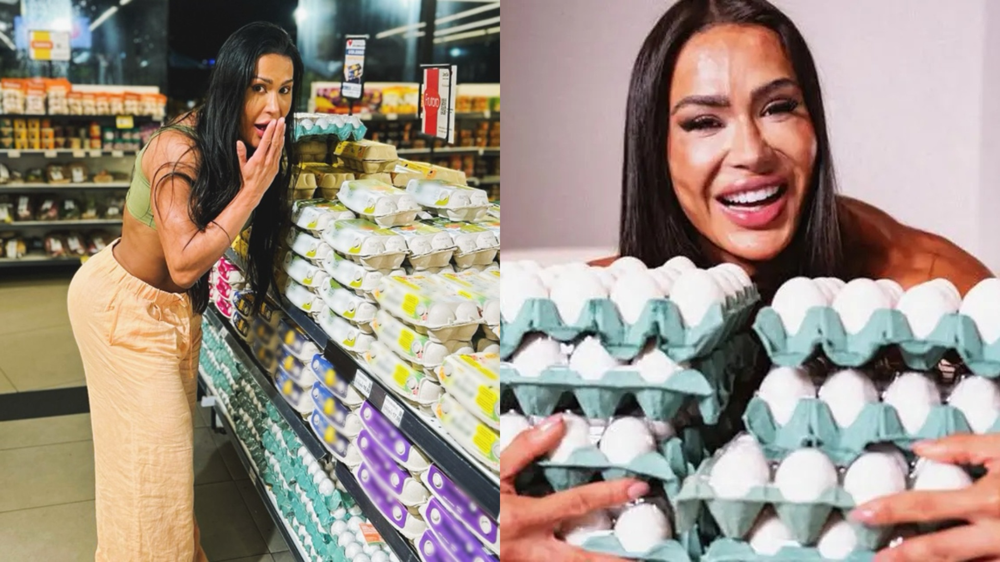
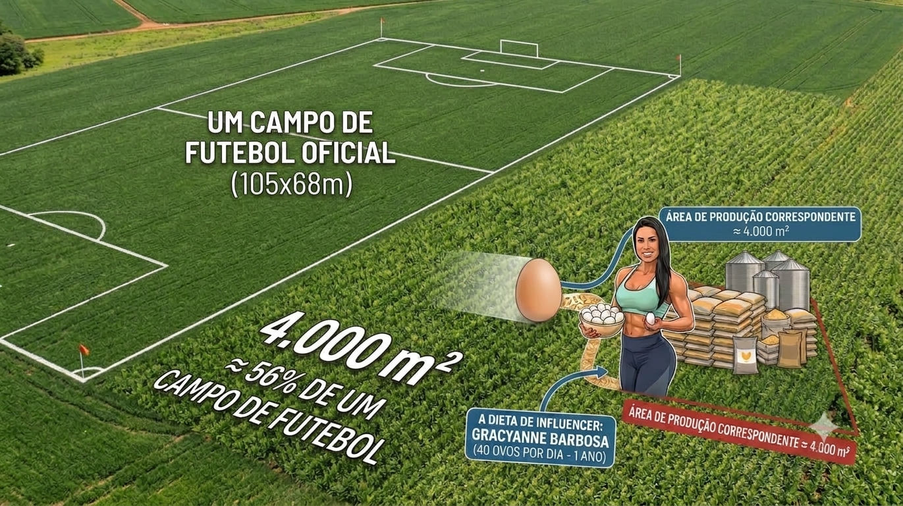
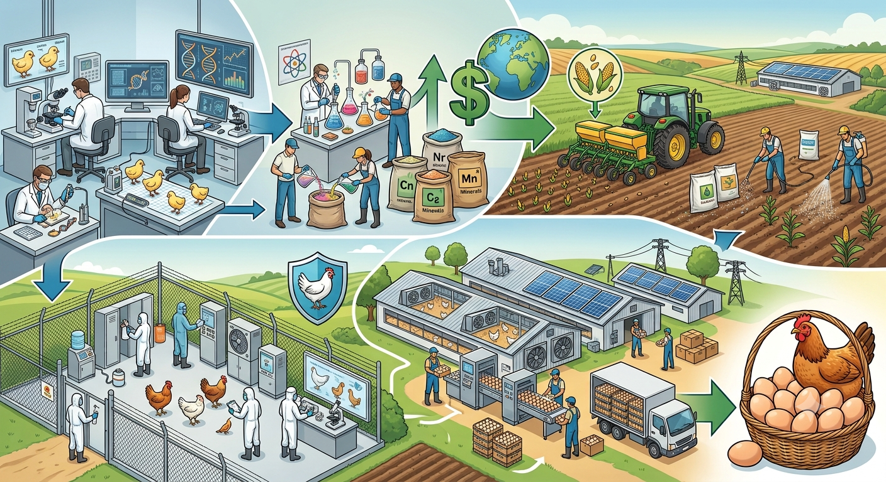
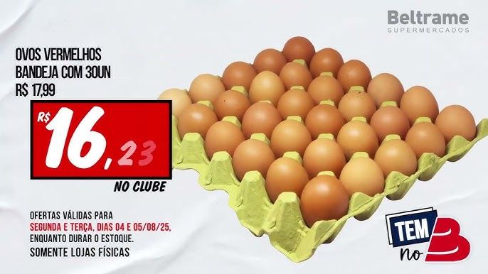
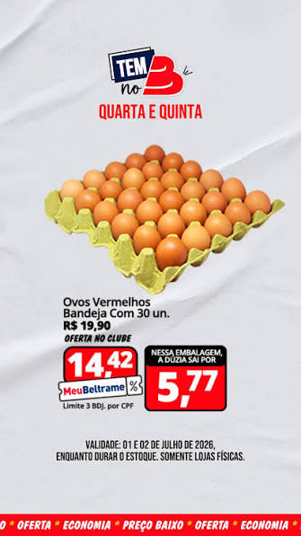
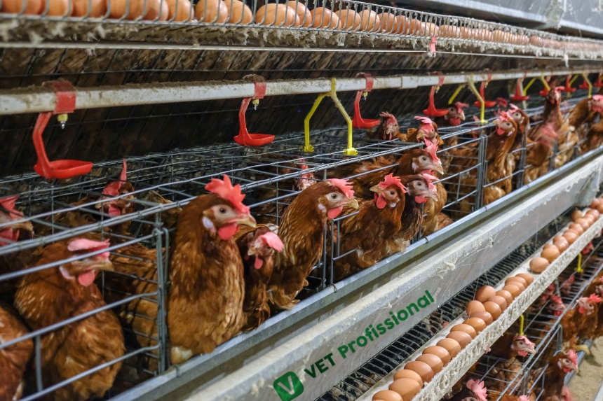
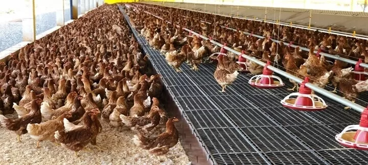
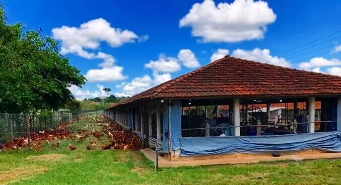
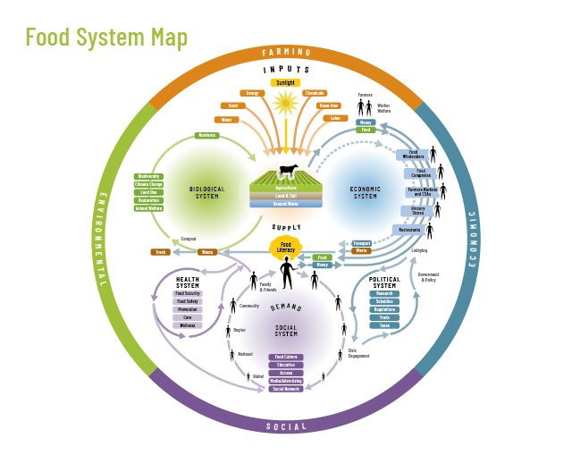

Do post ao hectare
 produzirnaobasta.com.br
produzirnaobasta.com.br
Estava tudo escrito ali
| Trecho da legenda | Camada da cadeia |
|---|---|
| "alta demanda pela proteína" | consumo |
| "elevados custos de produção" | milho, soja, ração |
| "ondas de calor" | ambiente |
Duas crises, mesmo ano, causas diferentes
Estados Unidos
Gripe aviária: 151 milhões de poedeiras perdidas entre 2022 e 2026. A dúzia passou de US$ 6,00 no início de 2025.
Brasil
Sem gripe aviária em granja comercial, naquele momento. A ração encareceu porque o milho encareceu. E surgiu um comprador novo: exportação de ovos +121% em volume em 2025.
40 ovos por dia
No BBB25, Gracyanne Barbosa calculou, em vídeo, quantos ovos levaria para três meses de confinamento.
Ela parou na primeira camada. E se a conta continuar?

Da dieta ao hectare
| Camada | Cálculo | Resultado |
|---|---|---|
| Ano inteiro | 40 × 365 | 14.600 ovos |
| Gente | ÷ 288 ovos por pessoa/ano | 51 brasileiros |
| Galinhas | ÷ 250 ovos por ave/ano | 58 poedeiras |
| Ração | 1,5 kg por dúzia | 1,8 t/ano |
| Milho | 1.150 kg ÷ 6,61 t/ha | 1.740 m² |
| Soja | 711 kg ÷ 3,13 t/ha | 2.270 m² |
| Lavoura | ≈ 4.000 m² | |
56% de um campo de futebol
Uma pessoa comendo 40 ovos por dia ocupa ≈ 4.000 m² de lavoura, todo ano.

E antes do milho?
- Genética: linhagens de poucas multinacionais
- Semente e adubo do milho
- Núcleo, calcário, aminoácidos: preço em dólar
- Sanidade: a biosseguridade abriu a exportação
- Embalagem, energia, frete

≈ 77 mil hectares a mais
Em fevereiro de 2025, isso tudo parecia insustentável.
Dezoito meses depois
O preço do ovo ficou no menor patamar real para o mês desde 2019.
Duas etiquetas, onze meses
| Bandeja de 30 | ago/2025 | jul/2026 |
|---|---|---|
| Preço cheio | R$ 17,99 | R$ 19,90 |
| "No clube" | R$ 16,23 | R$ 14,42 |


O preço não é um número. É uma disputa.
A granja de ovos disputa o milho com:

Preço alto convida expansão
Não são a mesma coisa
gripe aviária, onda de calor
súbito · passaconsumo de 191 para 288 ovos
lenta · ficapreço alto puxa investimento, que derruba o preço
recorrente · voltaOs 922 comentários trataram os três como a mesma coisa.
A granja não produz só ovo
- Ovo líquido e em pó: pão, massa, maionese, sorvete
- Galinha de descarte: uma receita quase sempre esquecida
- Esterco: volta como adubo para o milho
- Casca: calcário, ração
Em que sistema esses ovos foram produzidos?



Sem gaiola: até 1,5% do varejo brasileiro.
Isso tem nome
Sistema alimentar: toda a cadeia, da produção ao consumo e ao descarte, com efeitos econômicos, sociais e ambientais.
As decisões dentro da porteira não param na porteira.

O comentário leva quinze segundos
Para responder bem ao post, é preciso:
Referências
Dados: Cepea/Esalq-USP · Conab · ABPA · Observatório do Ovo, Alianima (2026) · USDA · ComexStat/MDIC · HLPE/FAO (2014) · Grisa et al., Ed. UFRGS (2022).
Imprensa: CNN Brasil · Bloomberg Línea · BrazilJournal.
Outras fontes: post @forbesbr · Beltrame Supermercados (Santa Maria) · Hendrix Genetics/Hy-Line · mapa Nourish Life · foto da colheita de milho: USDA, domínio público.
Material elaborado pelo Prof. Róberson Macedo de Oliveira (Colégio Politécnico da UFSM), com apoio de IA (Claude, Anthropic) na organização didática e na diagramação; conteúdo, seleção e decisões de ensino são do docente.